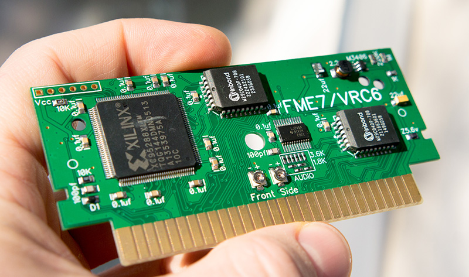
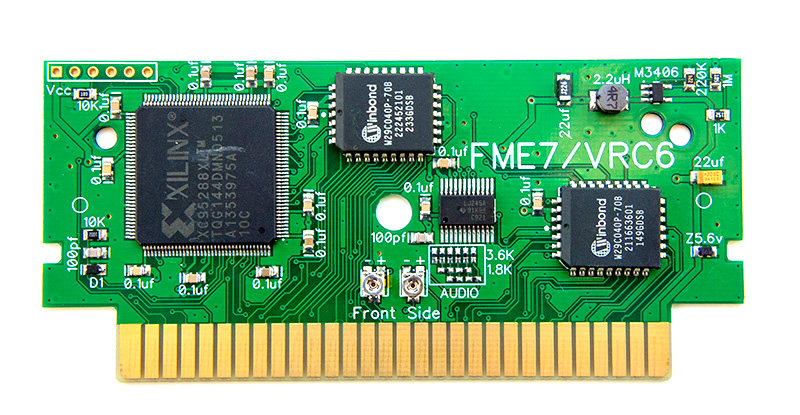

Реплика Mr.Gimmick / Castlevania III - Dracula's Curse


Полностью разработанная мною реплика mr. Gimmick или Akumajou Densetsu с поддержкой расширенного аудио.
Ничем не уступает оригинальным картриджам.
На плате размещено 2 регулятора громкости. Левый - регулирует громкость стандартных каналов консоли, а правый - громкость дополнительных каналов.
Максимальный уровень звука спец чипа
Максимальный уровень звука APU
Возможна запись одного из ромов:
Gimmick! (J) [!].nes - Японская оригинальная версия.
Akumajou Densetsu (J) [!].nes - Оригинальный ром на японском языке;
Akumajou Densetsu (J) [T+Eng1.0_Vice Translations].nes - Японская версия с Английским переводом;
Akumajou Densetsu (J) [T+RusBeta_Cool-Spot].nes - Японская версия с Русско-Английским переводом.
Цена платки + наклейки 400грн.
Связатся со мной можно по Viber, Telegram, Телефон +380992028599 Кузнецов Евгений
Отправка: новая почта/укрпочта. Оплата: наложка/приват